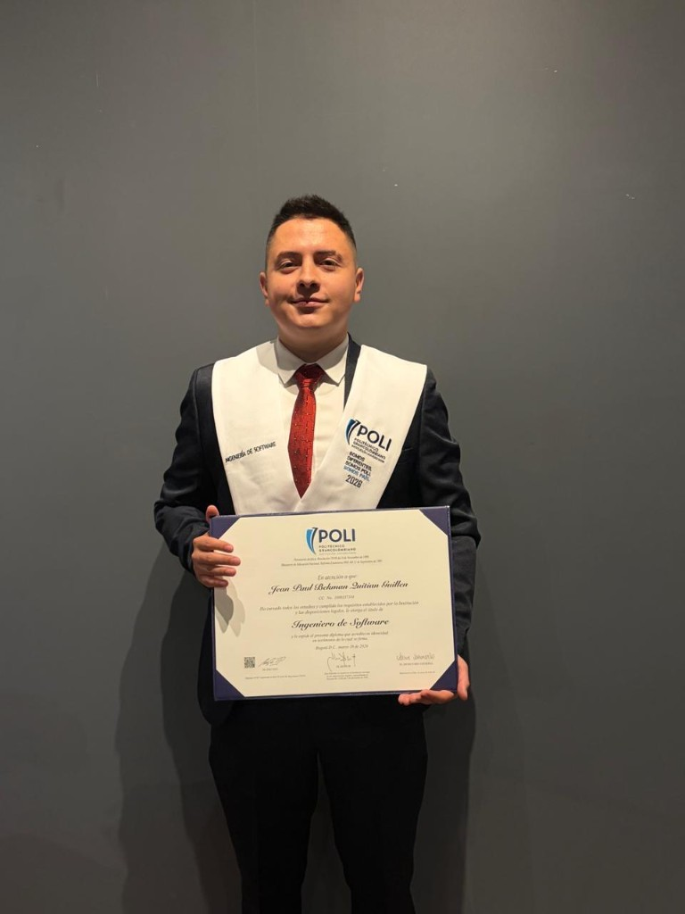
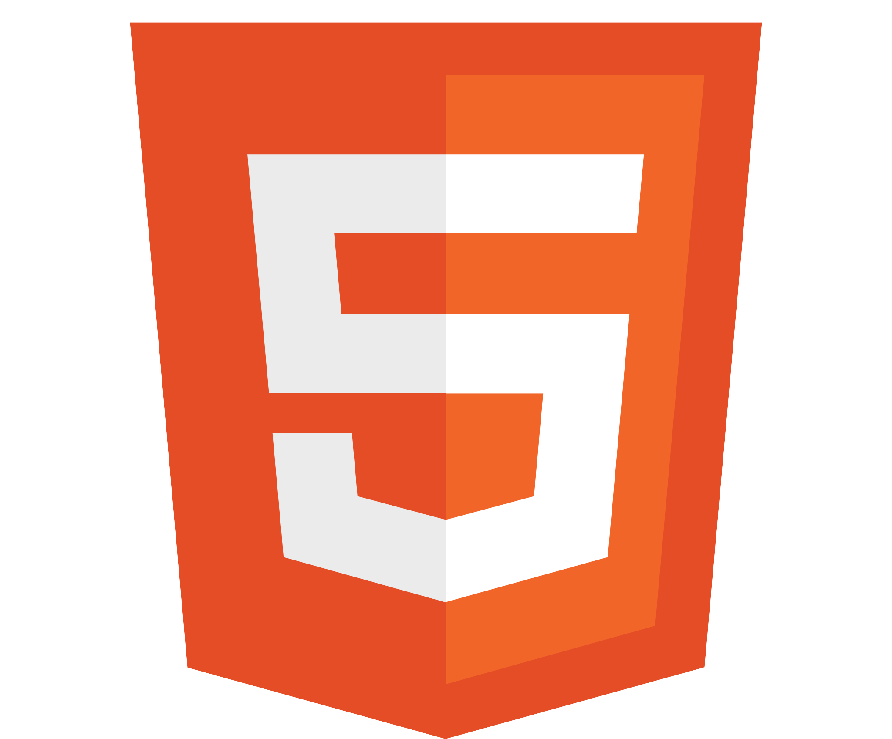

Automatización IA
Integración de OpenAI y LLMs en flujos empresariales con Python.

Hola, soy
Desarrollador backend en Python enfocado en automatización con IA. Experiencia en integraciones con OpenAI, APIs REST, Docker y bases de datos relacionales, así como en automatización de procesos con herramientas como n8n, SharePoint y Airtable. Interesado en roles de backend, AI automation y Cloud.
Integración de OpenAI y LLMs en flujos empresariales con Python.
APIs REST con Django, bases de datos relacionales y arquitectura escalable.
Docker, CI/CD, DevSecOps y despliegue en Azure y AWS.
GeoPark
Diseño e implemento automatizaciones con IA para distintas áreas de la empresa, integrando OpenAI vía API con backends en Python para reducir tareas manuales y acelerar flujos internos.
Periferia IT Group
Desarrollo de soluciones backend con Python y Django. Construcción y uso de APIs RESTful. Gestión de bases de datos relacionales, versionado con Git y colaboración en entornos ágiles con SCRUM.
Periferia IT Group
Automatización de procesos de desarrollo e implementación con Docker. Implementación de las mejores prácticas de DevSecOps, integrando la seguridad en pipelines de CI/CD y entornos de nube (Azure).
Proyectos desplegados y disponibles en GitHub.

HTMLPolitécnico Grancolombiano
2023 — 2026SENA
2020 — 2022Python Institute
Bogotá Institute of Technology (BIT)
Politécnico Grancolombiano
Estoy abierto a roles de backend, automatización con IA y proyectos cloud.
¿Tienes un proyecto o quieres conectar? Escríbeme por cualquiera de estos medios.